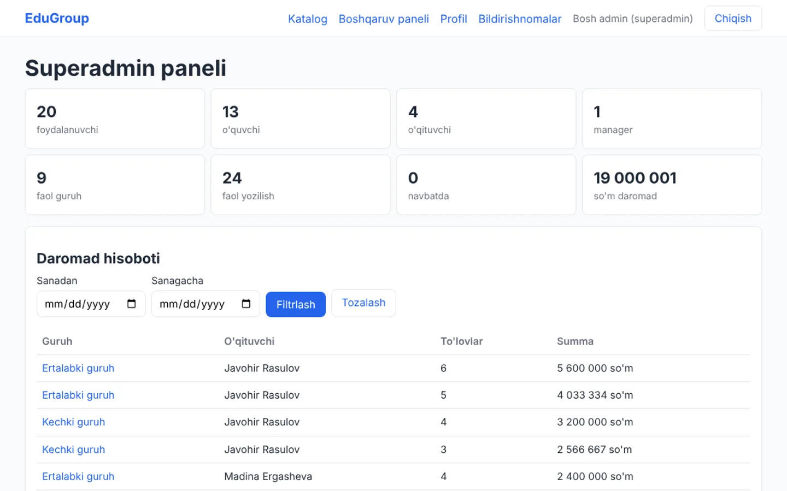
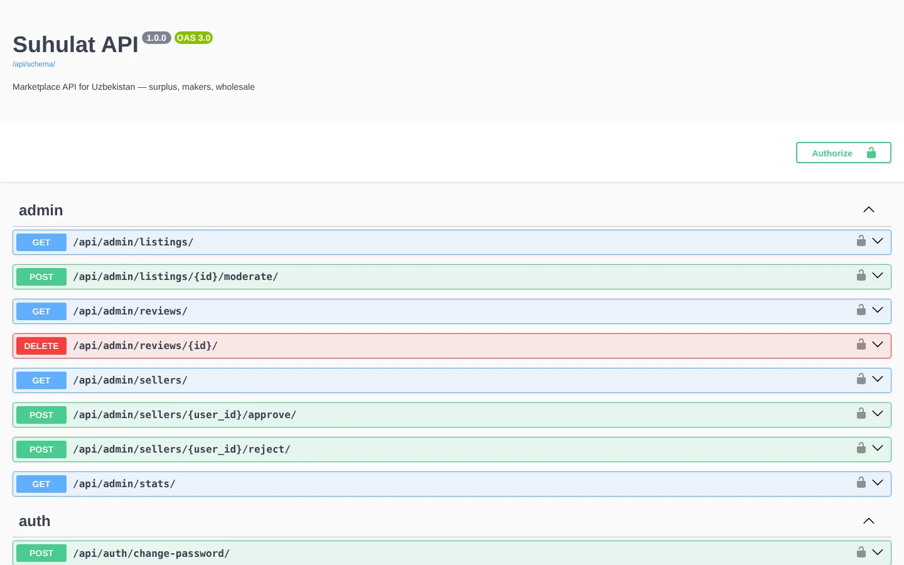
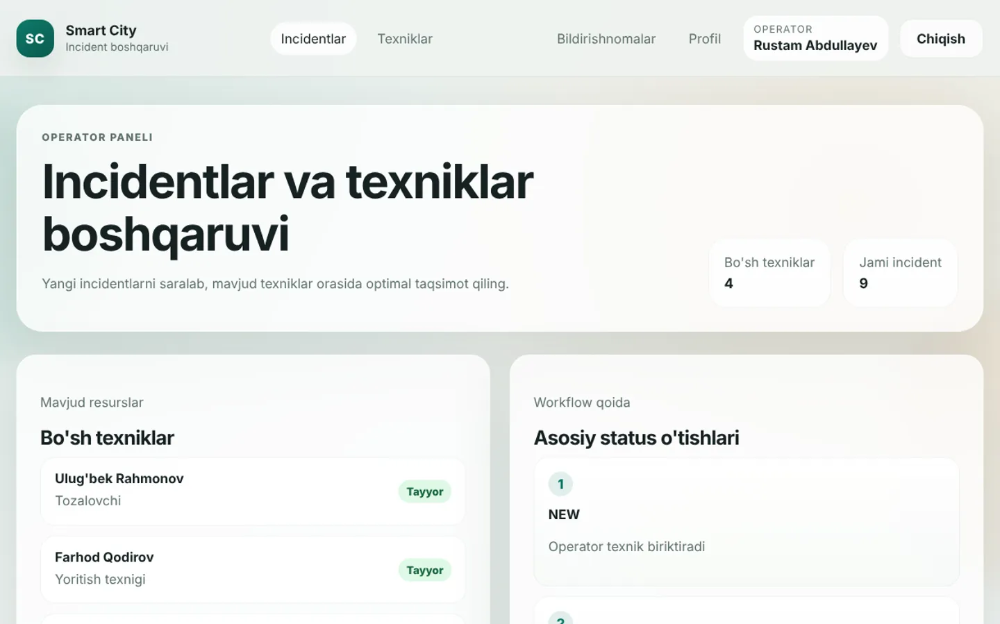
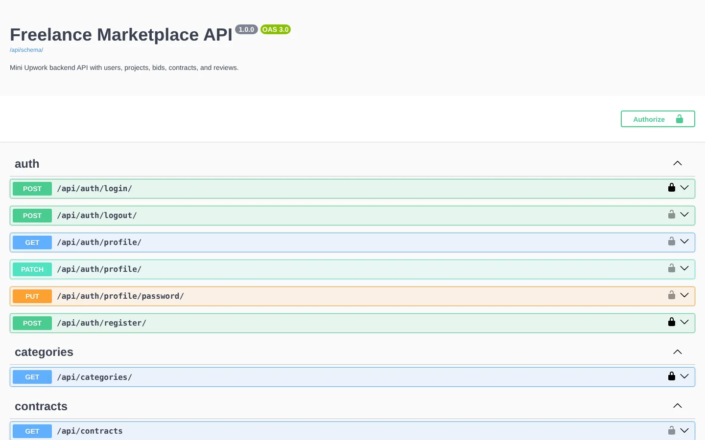

Mukhammad
Batoshev.
Backend Engineer. I build APIs and business systems with Python, FastAPI and Django REST Framework, after seven years in operations working with systems like them.
Systems for money, learning and cities, built to be used.
My main project is a deployed finance system for a private clinic. The others show the same habits in Django and DRF. Every screenshot uses fictional data.

Clinic CRM
Sole developer · Aug 2026 – Nov 2026
A finance and payroll system for a private clinic: receipts, doctors' commissions, salaries, the pharmacy account and expenses, with a dashboard that shows where every so'm went.
- 86 API endpoints
- 166 tests
- 3 user roles
- FastAPI
- SQLAlchemy 2.0 async
- PostgreSQL
- Alembic

EduGroup
Spec, review and testing · Jul 2026
An online learning platform with four roles, a self-promoting waitlist, instalment payments and background jobs that keep enrolments honest.
- 193 tests
- 4 roles
- 5 Docker services
- FastAPI
- async SQLAlchemy
- PostgreSQL
- Celery

Suhulat
Backend developer · Jun 2026
A marketplace API for goods sold by the kilogram, litre or box: listings, requests for quotation, offers, orders and an admin moderation API.
- 19 tests
- JWT with blacklist
- OpenAPI docs
- Django REST Framework
- SimpleJWT
- django-filter
- drf-spectacular

Smart City
Team project · May 2026
Incident reporting for city services. Citizens report problems, operators assign them, technicians fix them, and unconfirmed fixes close themselves after seven days.
- 4 roles
- 7-day auto-close
- Django server-rendered
- Django
- Class-based views
- Custom user model
- Role-based access

Job-X
Team project · Jun 2026
A freelance marketplace API in the style of Upwork: clients post projects, freelancers bid, and an accepted bid becomes a contract.
- JWT auth
- Postman collection
- OpenAPI docs
- Django REST Framework
- SimpleJWT
- django-filter
- drf-spectacular
Najot Ta'lim course work
Homework and exam projects from my Python backend course: Django, Django REST Framework, and seven FastAPI projects with async SQLAlchemy, JWT, pytest and Redis.
Mini Online Shop
Django shop with buyer and seller accounts, a cart with promo codes, checkout and order history.
From a first Django model to a deployed system in under a year.
- Aug 2026 – now
Clinic CRM FastAPI · deployed
Designed, built, tested and deployed a clinic's finance and payroll system on my own. In November I added the charts and money-flow dashboard.
- Jul 2026
Async, testing and background jobs
Async SQLAlchemy, pytest, Redis, Celery and RabbitMQ. EduGroup, built with Claude Code from my own specification.
- Jun 2026
Django REST Framework, then FastAPI
The Suhulat marketplace API, Job-X with a teammate, and my first FastAPI projects.
- Apr – May 2026
Authentication, permissions and a team project
Custom user models, token and JWT auth, OpenAPI docs. Smart City with teammates.
- Jan – Mar 2026
Started the Najot Ta'lim backend program
Python, Django models and the ORM, views, templates and forms.
Seven years as the person who used the systems I now build.
Before software I worked in materials and supply management, international procurement for a clinic, and dispatch for a US car hauler. I used enterprise and logistics software every day, so I know what operations staff need from it: numbers that reconcile, clear permissions, and an audit trail.
-
May 2023 – Jan 2026Remote · Hicksville, NY
Prime Track Inc. Dispatch Coordinator, Car Hauling
- Dispatched 7- and 9-car haulers: 2,150+ vehicles on 130+ trips, $3M+ in gross revenue.
- Sourced loads and negotiated rates with 130+ brokerages; tracked trucks and handled claims, DOT compliance and payment follow-up.
- Stood in as operations manager and trained new dispatchers.
SystemsCentral DispatchSuper DispatchSamsaraInternal CRM -
Jul 2021 – May 2023Tashkent · Hybrid
BROSMED Medical Clinic International Relations and Operations Coordinator
- Brought in international partners, including MIOT International (India) and partners in Turkey, and organized doctor exchange programs.
- Managed international procurement of medical equipment, supported hiring and trained staff on data entry.
-
May 2018 – Jun 2021
KBR Warehouseman → Materials Specialist → Operations Specialist
- Advanced in three years from the tool room to procurement and supply management, then to operations.
- Ran inventory control and receiving inspections, tracked assets, placed orders and built reports.
SystemsIBM MaximoDeltek CostpointSAPIBM CognosExcel
Records you can't quietly delete
Asset systems keep every change. In the Clinic CRM a wrong receipt is voided, not deleted: who voided it and when stays on record.
From Maximo and CostpointTotals that match the paper
In dispatch, every payment had to match the rate that was agreed. The clinic system rounds every receipt on its own, so a report always equals the receipts behind it.
From dispatch and paymentsThe right screen for each person
In every job, different people needed different access. The clinic system has three roles, and assistants only ever see their own entries.
From every team I worked inWhat I work with, and where you can see it.
Languages and frameworks
- Python all projects
- FastAPI Clinic CRM, EduGroup
- Django REST Framework Suhulat, Job-X
- Django Smart City
- Pydantic v2 Clinic CRM
- Jinja2 Clinic CRM, EduGroup
Data
- PostgreSQL all FastAPI work
- SQLAlchemy 2.0 (async) Clinic CRM
- Django ORM DRF projects
- Alembic 10 migrations
- SQL reports, indexes
- Redis tokens, rate limits
Security and APIs
- JWT access and refresh with revocation
- Role-based access 3 to 4 roles
- Rate limiting slowapi, DRF
- Argon2, bcrypt hashing
- OpenAPI and Swagger all APIs
- Postman Job-X
Jobs and deployment
- Docker, Docker Compose all FastAPI work
- Celery worker and beat EduGroup
- Render, Neon Clinic CRM
- Daily verified backups pg_dump, pg_restore
- Git, GitHub daily
Testing
- pytest, pytest-asyncio 166 + 193 tests
- httpx HTTP-level tests
- Real PostgreSQL in tests no SQLite fakes
- Django test framework Suhulat
How I work
- AI-assisted development Claude Code, Codex, Cursor
- Written specs first EduGroup's TZ.md
- Uzbek and English UIs Clinic CRM demo
Operations taught me the problem. Engineering lets me fix it.
After more than seven years in operations I changed my life and found who I really am: an engineer. Now I build the systems instead of working around them. I studied Python backend development at Najot Ta'lim in 2026, then built and deployed a finance and payroll system for a private clinic on my own.
I have an Economics with Finance degree from Westminster International University in Tashkent, so money that adds up matters to me. I worked for two American employers in English, and I'm comfortable working remotely across time zones.
I like software that operations people trust: the totals match, the permissions make sense, and nothing disappears.
Languages
- Uzbek Native
- English Full professional
- Russian Limited working
- Turkish Limited working
Education
- BSc (Hons) Economics with FinanceWestminster International University in Tashkent
- Python Backend DevelopmentNajot Ta'lim · Jan 2026 – Aug 2026
Also
- Best Intern of Generation 6Young Leaders Development Project, UzTEA · co-organized a summit for 70+ international students
- Regional titles in Combat Sambo and Jeet Kune Do2nd place in inter-university football with WIUT
Let's build something people can rely on.
I'm open to backend engineering roles in Tashkent or remote. The quickest way to reach me is Telegram or email.
- Emailm.aminovich7@gmail.com
- Telegram@aminovich7
- Phone+998 90 425 25 15
- LinkedInin/mukhammad-batoshev
- GitHubgithub.com/Aminovich7